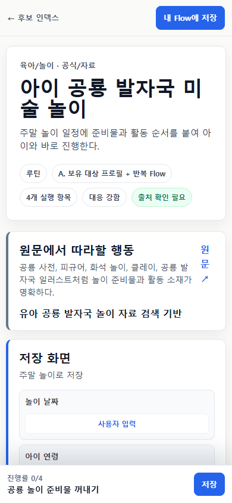

FlowMe 전략 보고서 · 2026-07-18CEO · 제품 · 콘텐츠팀 공통 기준
좋은 Flow는 정보를 줄인 목록이 아니라
상황에 맞게 꺼내 쓰는 실행 기준본이다
이번 보고서는 “어떤 카테고리부터 만들까?”보다 먼저, 어떤 데이터가 있어야 콘텐츠 하나가 실제 행동으로 이어지는지 정한다.
기준 Flow + 결과를 바꾸는 최소 입력 = 개인 실행본 + 자연스러운 외부 결과물
한 문장 정의특정 사람이 특정 상황에서 바로 실행할 수 있도록 출처·조건·순서·완료·결과물·버전을 함께 보존한 검토 가능한 실행 단위.
분류 원칙생활 분야, 7가지 실행 모양, 기본 결과물을 분리한다. 협업·출처 신뢰·경험 지도는 별도 축이다.
P0 포트폴리오제작자 원본 16개 + 공식 기준 4개 + 현재 기준 사례 4개. 8명×3개보다 8명×2개로 첫 부담을 낮춘다.
발행 원칙원문 행, 구체 완료 기준, 목적지, 권리·위험, 모바일 결과물이 모두 통과해야 한다. 실제 성과는 아직 미측정이다.
원본 콘텐츠공식 사실 · 제작자 경험 · 방법 · 주의
→
Flow 기준본하나의 사용자 일 · 실행 항목 · 완료 기준
→
최소 입력날짜 · 상황 · 참여자 · 제약 · 현재 상태
→
개인 실행본캘린더 · 체크리스트 · 표 · 메모
153현재 runtime seed Flow
847현재 실행 Item
105기존 수명주기에서도 보강 대상
24기본 결과물 목적지가 비어 있음
저장소 사실 2026-07-18 현재 seedBundles 재집계. 이전 593개 문서 수치가 아니라 현재 runtime 입력 153개만 센 값이다. 미측정 사용자·제작자 성과는 이 보고서에서 주장하지 않는다.
Flow의 제품 정의무엇과 다른가
Flow는 글도, 강의도, 체크리스트도, AI 답변도 아니다
각 형식은 유용하지만, 실행 가능한 기준본이 되려면 출처와 사용자 상태까지 이어지는 별도 구조가 필요하다.
글·영상
무엇과 왜를 설명한다.
- 맥락과 노하우가 풍부함
- 실행 순서가 흩어질 수 있음
- 완료·수정 상태를 갖지 않음
강의
지식을 단계적으로 가르친다.
- 학습 경로가 있음
- 생활 경험 전체에는 무거움
- 외부 도구 실행본이 목적은 아님
체크리스트
누락을 줄인다.
- 빠르게 쓸 수 있음
- 상황·분기·출처가 약함
- 표·일정·메모로 확장하기 어려움
AI 계획
한 번의 요청에 초안을 만든다.
- 생성과 개인화가 빠름
- 출처·버전·권리가 불안정할 수 있음
- 다시 쓰는 기준본과 사용 이력이 약함
Flow
검토된 기준을 상황에 맞게 실행한다.
- 원문 행과 제작자·기관을 보존
- 완료·분기·역할·주의를 구조화
- 같은 기준본을 여러 결과물로 변환
좋은 Flow = 원문 근거 + 하나의 사용자 일 + 실행 항목 + 완료 기준 + 적용 규칙 + 기본 결과물 + 버전
길다고 좋은 것이 아니다
설명은 Memo에 남기고, 독립 상태가 필요한 행동만 Item으로 만든다.
모든 항목을 개인화하지 않는다
결과를 바꾸는 값만 묻고 기준본은 그대로 보존한다.
모든 결과물을 만들지 않는다
표가 불필요한 여권 신청에 억지로 시트를 붙이지 않는다.
전략 판단 구조적 차이를 정의한 것이며 “AI가 계획을 못 만든다”는 성능 주장에 의존하지 않는다. 상위 계약: Canonical Flow Data Model v1.
분류 체계 결정한 개의 유형 목록으로 섞지 않는다
“일정·준비·루틴·협업·공식”을 같은 유형으로 두면 제품이 꼬인다
실행 순서, 함께 쓰는지, 출처가 공식인지, 여러 Flow가 연결되는지는 서로 다른 질문이다.
평면 목록으로 저장할 때 생기는 문제
일정형실행 모양
준비형실행 모양
루틴형실행 모양
결정형실행 모양
협업형참여 방식
경험 지도형여러 Flow의 관계
공식 기준형출처·신뢰
한 Flow가 “일정형이면서 협업형이고 공식 출처를 포함”할 수 있어 단일 enum으로는 표현할 수 없다.
권고: 네 축으로 분리
생활 분야육아·여행·집·학습 등 발견과 포트폴리오
×
실행 모양 7날짜·순서·반복·행·큐·결정·단계
×
기본 결과물캘린더·체크·할 일·표·메모·혼합
함께 실행
참여자·역할·인계
출처 신뢰
제작자·공식·권리·주의
경험 지도
선행 Flow·다음 선택
육아 박물관 Flow 하나를 “육아 × 날짜 역산 × 혼합 + 가족 협업 + 장소 공식 정보”로 정확히 표현할 수 있다.
의사결정 제안 · 제품·콘텐츠 표준의 “7가지”는 실행 모양 7종으로 확정하고, 협업·신뢰·경험 지도는 독립 축으로 승인한다.
승인된 상위 계약 현재 canonical spec은 이미 lifeArea, planningPattern, primaryArtifact를 분리한다. 계약 JSON: Flow 콘텐츠 계약 v1.
Flow 해부도어디까지가 콘텐츠이고 어디부터가 개인 상태인가
원문 한 줄이 실행 항목이 되고, 실행 항목이 여러 결과물로 보인다
원문 근거최소 사실·행·구간
위치와 버전 보존
→
실행 항목독립 완료·결정·기록
가장 작은 상태 단위
→
단계날짜·주차·준비 구간
의미가 같은 항목 묶음
→
Flow하나의 사용자 일
주 출처와 기본 결과물
→
경험 지도여러 Flow의 선행조건
다음 선택과 갈림길
모든 Flow가 답해야 할 7가지
- 목표와 기대 결과
- 대상 사용자와 적용 상황
- 주 출처·제작자·확인일·권리
- 단계와 독립 실행 항목
- 완료 기준과 다음 행동
- 기본 결과물
- 위험·검토·버전
필요할 때만 구조화할 것
- 날짜·시간·기간·반복
- 선행조건·제외조건
- 시간·비용·준비물
- 선택 분기·대체안·중단 조건
- 참여자·역할·인계
- 비교·진도·재고 Field와 Memo
만들면 안 되는 것
- 설명을 가짜 할 일로 쪼개기
- 근거 없는 날짜 만들기
- “확인했어요”로 끝나는 완료 기준
- 주의를 일반 체크로 바꾸기
- 필요 없는 민감 정보 입력
Flow 기준본
출처가 뒷받침하는 순서, 기본 완료 기준, 적용 조건, 결과물, 버전. 사용자가 원문과 주의를 지울 수 없다.
개인 실행본
선택 날짜, 적용된 항목, 역할, 개인 메모, 완료·중단·건너뜀. 기본은 비공개이며 기준본을 덮어쓰지 않는다.
저장소 계약 Item은 독립 상태 단위, Field는 정렬·기록·출력에 필요한 값, Memo는 방법·수량·링크·예외·주의다. 자세한 필드: 콘텐츠 계약 JSON.
데이터 응축 과정원본을 버리는 요약이 아니라 추적 가능한 변환
출처와 경험을 섞지 않고, 실행에 필요한 만큼만 구조화한다
좋은 Flow는 원문을 짧게 만드는 것이 아니라, 무엇이 사실이고 무엇이 경험이며 무엇이 개인 상태인지 분리한 채 실행으로 옮긴다.
01원본 고정제출 URL, 현재 URL, 제목, 제작자·기관, 권리, 확인일
02원문 행 분리공식 사실, 제작자 경험, 행동, 방법·수량, 주의, 생략 행
03사용자 일 선택한 가지 목표와 기본 결과물. 카테고리보다 사용 상황을 먼저 결정
04기준본 구성단계, 실행 항목, 완료 기준, 조건부 Field·Memo·분기
05사람 검토출처 충실도, 권리, 최신성, 지역성, 위험, 모바일 결과물
06개인 적용최소 입력으로 일정·선택·역할을 바꾸되 출처와 주의는 잠금
공식 사실대상, 기간, 신청 조건, 필수 서류처럼 현재 기관 자료가 결정한다. 발행 시점과 사용 시점에 다시 확인한다.
제작자 경험순서, 실패 회피, 준비 팁, 대체안처럼 직접 해본 판단을 제작자명·원본 링크·승인과 함께 남긴다.
주의와 경계의료·법률·재무 결론을 만들지 않는다. 중단, 보류, 기관·전문가 문의 조건을 따로 표시한다.
공개 기준본출처 행, 제작자, 공식 사실, 기본 순서, 완료 기준, 주의, 버전
→
비공개 개인 실행본선택 날짜, 역할, 개인 메모, 접수번호, 완료·중단 기록. 동의 없는 플랫폼 학습에 사용하지 않음
규칙 하나의 주 출처가 구조를 통제하고, 지원 출처는 공식 경계·안전·도구만 보완한다. 원문 밖 행동을 조용히 추가하지 않는다. Source-to-Flow Conversion Gate.
사용자 적용처음부터 모든 것을 묻지 않는다
입력은 “결과가 바뀌는가?”를 통과할 때만 받는다
질문이 많아질수록 맞춤처럼 보이지만 실행 시작은 늦어진다. 기본 결과물을 먼저 보여주고 필요한 분기에서만 추가 질문을 연다.
결과를 바꾸지 않는 취향
출처 근거 없는 민감 정보
기본값으로 충분한 시간대
내부 검토·분류 상태
1. 결과물 먼저
“이 콘텐츠는 체크리스트와 일정으로 바뀝니다”를 먼저 보여준다.
2. 필수 입력만
이사일처럼 결과 전체를 바꾸는 값 한두 개를 먼저 받는다.
3. 분기 때 추가
아파트를 선택했을 때만 엘리베이터·관리사무소 항목을 연다.
제품 원칙 개인화의 크기가 아니라 실행 시작까지의 거리로 평가한다. 사용자 입력은 기준본을 수정하지 않고 개인 실행본의 선택·일정·역할·메모에만 적용한다.
공통 실행 모양카테고리가 달라도 재사용하는 7가지
콘텐츠팀은 카테고리가 아니라 실행 모양을 먼저 고른다
| 실행 모양 | 핵심 질문 | 기본 결과물 | 대표 예시 |
|---|
| 날짜 역산형 | 기준일 전후에 언제 무엇을 해야 하나? | 캘린더 + 체크 | 이사 D-30, 여행 D-7, 행사 준비 |
| 순서 실행형 | 어떤 순서로 해야 실패와 누락을 줄이나? | 체크 + 메모 | 레시피, 만들기, 신청 준비 |
| 반복 루틴형 | 어떤 주기로 반복하고 언제 쉬거나 멈추나? | 캘린더 + 체크 | 그림책, 달리기, 주간 정리 |
| 행·표 실행형 | 원문의 여러 행을 어떻게 선택·기록하나? | 표 + 체크 | 준비물, 재고, 메뉴 |
| 자료 큐형 | 어떤 자료를 어떤 순서로 소비하나? | 할 일 + 표 | 영상, 책, 체험 후보 |
| 비교 결정형 | 어떤 기준으로 선택·보류·거절하나? | 표 + 메모 | 장소, 중고차, 계약 전 확인 |
| 단계 성장형 | 여러 단계의 결과물을 어떻게 완성하나? | 할 일 + 표 | 포트폴리오, 입사 적응, 영상 시리즈 |
함께 실행어느 실행 모양에도 참여자·역할·인계·공동 완료를 덧붙일 수 있다.
출처 신뢰제작자, 공식 기관, 확인일, 버전, 권리, 위험과 주의는 실행 모양과 독립이다.
경험 지도여러 Flow의 선행조건과 다음 선택을 연결한다. P0는 한 Flow의 완결성을 먼저 검증한다.
카테고리는 발견을 돕고, 실행 모양은 데이터를 정하며, 기본 결과물은 사용자가 가져갈 가치를 정한다.
계약 정합성 기존 runtime의 timeline / routine / checklist / phase는 표현용 축약이다. 내부 표준은 7개 planning pattern을 유지하되, CEO·사용자에게는 4가지 사용 방식으로 간소화해 설명한다.
카테고리 예시 지도 I육아 · 여행 · 학습 · 식사
같은 카테고리 안에서도 다른 실행 모양과 결과물이 필요하다
각 예시는 발행 완료 콘텐츠가 아니라 콘텐츠 계약을 검증할 후보다. 제작자 원본은 허가와 정확한 원문 행이 있어야 한다.
육아 생활 운영
주말 박물관날짜 역산일정 + 체크
가족 생일날짜 역산역할 + 일정
그림책 한 권반복 루틴체크 + 메모
공룡 미술 놀이순서 실행체크
여행·외출
가족여행 D-30날짜 역산혼합
비 예보 나들이비교 결정메모 + 일정
가족 캠핑 준비행·표 실행표 + 체크
지역 체험 후보자료 큐할 일
학습·커리어
자격시험 D-30단계 성장혼합
면접 D-14날짜 역산일정 + 메모
입사 첫 30일단계 성장할 일
강의 영상 학습자료 큐표
요리·식사·생활
주간 식사 준비행·표 실행표 + 일정
제작자 레시피순서 실행체크 + 메모
손님 초대 D-3날짜 역산혼합
냉장고 파먹기행·표 실행표
첫 진입 장면
육아 전체가 아니라 “이번 주말 가족이 무엇을 어떻게 할지”를 먼저 푼다.
제작자 원본 가치
실패 회피, 준비 순서, 대체안이 원본 링크와 함께 남을 때 AI 초안과 달라진다.
자료 큐의 조건
채널 URL만으로는 부족하다. 실제 영상·글 행 전체를 가져와야 한다.
전략 후보 카테고리별 4개, 총 32개 전체 원장: 카테고리 예시 JSON.
카테고리 예시 지도 II운동 · 행사 · 창작 · 민감 준비
Flow 구조는 수평으로 유지하고, 위험과 권리는 별도 문턱으로 잠근다
민감 영역은 조언을 생성하지 않는다. 공식 확인, 준비, 서류 상태, 문의 대상까지만 실행 Flow로 만든다.
운동·취미
5km 달리기 4주반복 루틴일정 + 기록
초보 등산 하루날짜 역산혼합
작은 전시 6주단계 성장할 일
벽 한 면 칠하기순서 실행체크
이사·행사·행정
이사 D-30날짜 역산혼합
결혼 준비단계 성장일정 + 비교
자동차검사 D-14날짜 역산혼합
여권 재발급순서 실행체크 + 메모
창작·프로젝트
영상 시리즈 4주단계 성장혼합
주간 글 연재반복 루틴일정
소규모 행사 운영날짜 역산역할 + 일정
공동 제작단계 성장표
민감 영역의 준비·확인
전세계약 서류비교 결정보류표
세금 신고 서류행·표 실행표
건강검진 방문순서 실행체크
아동 외출 안전순서 실행연락 체크
금지
진단·치료·법률 결론·투자 판단·안전 점수
개인정보
계약서 원문·주민번호·계좌·진료 기록 저장 유도 금지
제품 경계 Vertical 전문 앱을 만드는 것이 아니라, 출처가 있는 준비·확인 흐름을 같은 수평 계약으로 표현한다.
상세 사례 1제작자 원본형 · 육아 생활 운영
토요일 공룡 발자국 미술 놀이
모델 예시 · 발행 금지 현재 화면 후보를 완성된 콘텐츠처럼 보이지 않게 하고, 제작자 허가와 정확한 원문 행이 들어온 뒤에만 P0 후보로 올린다.

현재 저장소 후보 미리보기 · 출처 확인 필요 상태가 보인다
원본 데이터에서 보존할 것
행동준비물을 모으고 발자국을 찍는다.
제작자 경험바닥 보양과 닦을 도구를 먼저 둔다.
경계발달 평가·교육 효과를 주장하지 않는다.
발행 문턱허가, 정확한 원문 행, 재료 주의 출처
Flow 기준본
목표: 보호자와 아이가 준비부터 정리까지 45분 안에 놀이 한 번을 끝낸다. 실행 모양은 순서 실행형, 기본 결과물은 체크리스트, 함께 실행과 출처 신뢰를 덧붙인다.
1. 공간·재료 준비바로 시작할 상태
2. 발자국 작품한 장 완성
3. 아이 말 듣기선택적 한 줄
4. 재료 정리바닥·도구 정돈
5. 다음 선택반복·다른 놀이·종료
중단 분기아이가 원하면 바로 정리
최소 입력 → 개인 실행본
2026-07-25 10:00 · 보호자 1명 + 아이 1명 · 준비물 있음. 보호자는 보양·정리를 맡고, 아이는 놀이 선택과 참여를 맡는다.
캘린더10:00-10:45 일정 1건
체크리스트준비·놀이·정리·선택 5개
표한 번의 놀이에는 불필요
메모준비물·원본·주의·비공개 한 줄
현재 후보 kids-dino-footprint-art는 넓은 출처를 사용한 catalog preview다. 화면이 있어도 제작자 허가와 source row가 없으면 “좋은 Flow” 발행 기준을 통과하지 못한다.
상세 사례 2날짜 역산 + 가족 협업 + 공식 지원 출처
8월 31일, 두 사람이 함께 하는 이사 D-30
현재 기준 사례 · 보강 필요 원문 자체가 D-day 표와 결과물을 제공하지만, 현재 24개 실행 항목 중 구체 완료 기준은 5개뿐이다.

현재 후보 화면은 이사일 입력을 받지만, 실행 항목·역할·완료 기준이 더 필요하다
원본 → 기준본
주 출처의 D-30·D-10·D-3·D-1·D-Day 행을 보존하고, 전입신고·확정일자는 정부24와 인터넷등기소를 지원 출처로 연결한다. 주 출처 밖 행동을 몰래 추가하지 않는다.
최소 입력
이사일2026-08-31 → 모든 날짜 이동
상황아파트 → 관리사무소·엘리베이터 포함
서비스인터넷만 이전 → 정수기 항목 제외
개인 실행본의 시간축
8/1D-30 업체·정리
8/21D-10 신고·예약
8/28D-3 설치·동선
8/30D-1 가방·서류
8/31인계·사진·정산
9/1행정 결과 확인
A는 업체·관리사무소·이전 설치, B는 정리·당일 가방·서류를 맡는다. 개인 접수번호와 사진 위치는 비공개다.
캘린더D-30부터 D+1까지 실제 일정
체크리스트적용 항목만 역할별로 표시
표업체·견적·담당자·접수번호
메모원본·공식 링크·예외·보관 위치
현재 공식 확인 정부24는 전입 후 14일 이내 신고와 온라인 신청 조건을 안내한다. 전입신고 공식 안내. 이는 Flow 전체의 주 출처가 아니라 행정 Item의 공식 경계다.
상세 사례 3공식 기준 + 조건 분기 + 사용자 지정 알림
공식 기준으로 여권 재발급 준비하기
공식 출처 재확인 저장소가 7월 11일 기록한 메뉴 경로와 7월 18일 현재 공식 안내 경로가 달라졌다. 이것이 확인일·버전 원장이 필요한 이유다.

현재 후보 화면 · 출국 예정일 입력과 공식 원문 연결을 보여준다
공식 원문에서 잠그는 사실
기존 전자여권 발급 이력, 재발급 사유, 온라인 불가 조건, 사진 시점, 신청 채널, 수령 기관과 상태 확인 경로. FlowMe는 대상 판정이나 발급 가능성을 보장하지 않는다.
세 가지 질문으로 경로를 좁힌다
기존 전자여권?온라인 신청 대상 분기
재발급 사유?분실·훼손·정보 변경은 방문 경로 확인
신청자 연령?법정대리인과 서류 조건 확인
개인 실행본
성인 · 기존 전자여권 있음 · 유효기간 만료 → 온라인 신청 가능성 확인 경로. 사용자가 9월 1일을 확인일로 정하면 알림 한 건만 만든다. 공식 마감일처럼 표현하지 않는다.
조건 확인신청 경로 판단 정보 확보
사진 준비현재 공식 조건 확인
신청 경로채널·수령 기관 선택
접수 기록접수번호·상태 경로 메모
수령 준비현재 공식 안내 재확인
버전확인일 2026-07-18
캘린더사용자 지정 확인 알림 1건
체크리스트조건·사진·신청·접수·수령
표단일 신청에는 불필요
메모공식 링크·확인일·접수 정보·주의
공식 자료 외교부 재발급 안내, 외교부 온라인 재발급 안내, 정부24 여권 발급. 화면 예시는 제품 모델이며 실제 신청 전 최신 안내 재확인이 필요하다.
AI 대비 차별화생성 성능이 좋아져도 남는 구조
AI는 초안을 만든다. FlowMe는 다시 쓸 수 있는 기준과 사용 상태를 소유한다
차별점은 더 그럴듯한 목록이 아니라, 같은 원본이 누구에게 어떻게 적용됐는지 추적하고 안전하게 다시 쓰는 구조다.
| 비교 항목 | 범용 AI 계획 | 좋은 Flow |
|---|
| 출처 | 요청 방식에 따라 생략되거나 섞일 수 있음 | 원문 URL·행·제작자·기관·확인일을 고정 |
| 일관성 | 같은 요청도 결과가 달라질 수 있음 | 버전이 있는 기준본을 반복 적용 |
| 분기 | 대화 안에서 일회성으로 제안 | 조건과 선택 결과를 명시적으로 보존 |
| 제작자 | 원본과 책임 관계가 흐려질 수 있음 | 승인, 원본 링크, 수정 범위와 권리 보존 |
| 외부 결과물 | 텍스트 복사 중심이 되기 쉬움 | 같은 Item을 캘린더·체크·표·메모로 투영 |
| 사용 이력 | 대화 기록에 머물 수 있음 | 완료·중단·건너뜀·개인 수정은 비공개 실행 상태로 분리 |
| 업데이트 | 원본 변경과 개인 수정 관계가 불명확 | 새 버전과 개인 실행본을 비교해 적용 |
AI가 맡을 일
- 원문 이해와 행 추출 제안
- 구조 초안과 누락 후보 제안
- 사용자 입력에 따른 일정·표현 제안
- 설명 요약과 개인화 문구
FlowMe가 소유할 일
- 출처·권리·버전·제작자 관계
- 검토된 기준본과 완료 의미
- 결과물 투영 규칙과 사용자 수정
- 비공개 실행 상태와 동의한 집계 신호
AI가 더 좋아질수록 “생성”은 싸진다. FlowMe의 자산은 검토된 기준, 제작자 책임, 재사용, 버전과 실제 적용 구조다.
전략 판단 특정 AI 제품의 현재 실패율을 주장하지 않는다. 구조적 소유권과 데이터 경계를 정의한 비교다. 관련 전략: AI 시대 플랫폼 전략.
현재 콘텐츠 차이20개 표본 감사 + 전체 runtime 재집계
수량은 있다. 대표 Flow의 완성도와 표준 일관성이 부족하다
148/179표본 Item에 완료 문구가 있음
21그중 자기참조형 일반 문구
2/20기본 결과물 목적지 누락
2/20구조화된 중단·보류가 있음
기준 사례 유지 · 5
- 여행 짐 싸기
- 컴활 D-30
- 냉장고 파먹기
- 포트폴리오 4주
- 여권 재발급
보강 · 8
- 이사 D-30: 목적지·완료
- 결혼 준비: 일정·결정 분리
- 국내여행 짐: 표 목적지
- Q-Net: 마감·완료
- 플랭크: 반복·중단
- 자동차검사: 결과 후 조치
- 중고차: 비교표·전문가 경계
- 전세: 공식 주 출처·보류
검토 전 미리보기 · 6
- 한글 자료 큐: 실제 행 필요
- 그림책: 정확한 출처 필요
- 공룡 놀이: 허가·주의 필요
- 영유아 검진: 민감 검토
- 초등 입학: 지역 분기
- 레시피 영상: 개별 원본 필요
전체 153개 중
기존 수명주기 기준 보강 105개, 유지 44개, 미리보기 2개, 숨김 2개.
결과물
153개 중 24개는 기본 목적지가 비어 있어 실행 가치가 불명확하다.
분기·역할
현재 타입에는 참여자 역할과 일반 분기 계약이 없고, stop/hold 구조도 6개뿐이다.
카테고리
90개 문자열을 그대로 taxonomy로 쓰지 말고 9개 lifeArea로 매핑해야 한다.
실제 명령 결과 20개 표본의 179개 Item을 다시 읽었다. “완료 문구가 있음”은 실제 사용자 검증을 뜻하지 않는다. 상세 20행과 gap: 예시·감사 원장 JSON.
P0 콘텐츠 포트폴리오24개를 수량이 아니라 학습 구조로 구성
8명×3개가 아니라, 제작자 16 + 공식 4 + 기준 사례 4
제작자에게 처음부터 세 개를 요구하지 않는다. 두 개를 완성해 발행 기준과 유입 조건을 확인한 뒤 세 번째를 만든다.
16허가된 제작자 원본8명×2개. 육아 생활 운영 8개, 여행 4개, 식사·취미·운동·창작 4개.
4공식 기준 Flow여권, 자동차검사, 초등 입학, 전세계약 서류. 최신성·민감 잠금 검증.
4현재 기준 사례이사, 냉장고, 포트폴리오, 여행 짐. 결과물과 패턴 회귀 검증.
제작자 원본 16
C01 주말 박물관
C02 비 오는 날 대체 나들이
C03 공룡 미술
C04 그림책 질문
C05 가족 생일
C06 가족 캠핑
C07 아이와 피크닉
C08 학교 행사 역할
C09 가족여행 D-7
C10 가족 짐 준비표
C11 테마파크 선택
C12 지역 체험 큐
C13 제작자 레시피
C14 주말 벽 칠하기
C15 5km 4주
C16 영상 시리즈 4주
공식 기준 4
O01 여권 재발급
O02 자동차검사
O03 초등 입학
O04 전세 공식 서류
기준 사례 4
R01 이사 D-30
R02 냉장고 7일
R03 포트폴리오 4주
R04 여행 짐 준비
1. 출처·권리
원문 행과 제작자 승인 또는 공식 최신성
2. 실행 계약
행동형 Item·구체 완료·필요한 분기와 역할
3. 결과물
최소 입력 전후 미리보기와 자연스러운 목적지
4. 품질·모바일
평균 3.5+, 실행·출처 4+, 화면 잘림 없음
내부 자원 가설
120~176시간. 실제 작업 기록 전에는 예산 예측이 아니라 승인용 범위다.
제작자 사례비 가설
8명 합계 240만~400만원. 권리 검토 비용은 별도다.
세 번째 Flow 조건
첫 두 개가 발행 기준을 통과하고 제작자 링크 유입이 확인된 뒤 제작한다.
가설·미측정 수량·시간·사례비는 파일럿 자원 계획이며 FlowMe 성과가 아니다. P0 24개를 Flow 카드로 보기 · 초기 포트폴리오 원장.
CEO 결정오늘 승인할 세 가지
새 기능이 아니라 콘텐츠 단위와 발행 문턱을 먼저 승인한다
승인 후에도 실제 제품 코드와 편집기는 이 전략 세션에서 만들지 않는다. 다음 콘텐츠·제품·개발 세션의 입력만 고정한다.
1
Flow를 “검토 가능한 재사용 실행 단위”로 정의할 것인가?
한 Flow는 하나의 사용자 일, 하나의 주 출처, 하나의 기본 결과물을 갖고 기준본과 개인 실행본을 분리한다.
권고 · 승인
글 요약과 AI 생성 목록을 Flow라고 부르지 않는다.
2
7개 실행 모양과 3개 독립 축을 제품·콘텐츠 표준으로 채택할 것인가?
날짜·순서·반복·행·큐·결정·단계를 planning pattern으로, 협업·신뢰·경험 지도를 별도로 둔다.
권고 · 승인
협업형·공식형을 같은 enum에 넣지 않는다.
3
P0 24개 구성과 발행 통과 기준을 승인할 것인가?
제작자 원본 16개, 공식 기준 4개, 현재 기준 사례 4개. 제작자는 8명×2개로 시작한다.
권고 · 조건부 승인
권리·출처·결과물·품질 문턱을 통과한 항목만 공개한다.
콘텐츠팀으로제작자 브리프, source row 추출, 24개 제작·검토 큐, 발행 통과표.
제품팀으로기본 결과물 먼저 보기, 최소 입력, 분기·역할·주의 노출, 기준본과 개인 실행본 경계.
개발 세션으로전략 승인 뒤 canonical adapter·projection 요구사항만 넘긴다. 이번 보고서에서 구현 완료를 주장하지 않는다.
계속
URL·출처 신뢰·내보내기·현재 기준 사례·공식 원본 수급.
보강
source row, 완료 기준, 결과물, 상황 분기, 역할, 제작자 승인·권리.
뒤로
전면 편집기, Vertical 앱, OAuth, 플랫폼 거래, AI 자동 발행.
완료 범위 전략 보고서와 데이터 원장을 작성했다. 아직 없음 실제 사용자 실험, 제작자 승인, P0 24개 발행, runtime canonical 구현. 이 네 가지가 없는 상태를 성과처럼 표현하지 않는다.